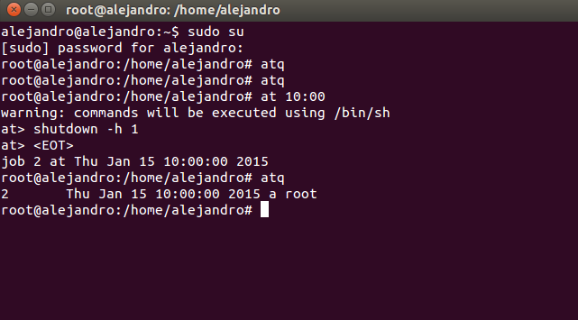
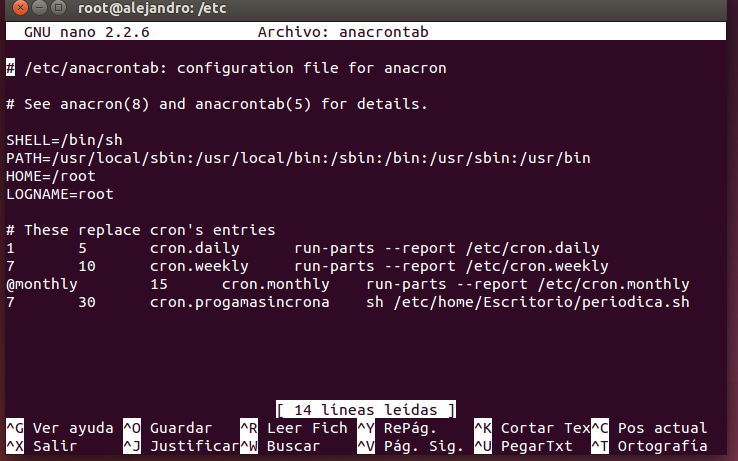

- Módulo: Administraci√≥n de Sistemas Operativos
- Título del trabajo
- Componentes del grupo: Alejandro Garcia Yumar
- Curso Académico: 2014/2015
- Fecha de entrega: 22/01/2014
El ejercicio consiste en configurar una serie de tareas programadas, tanto en windows como en linux.
Los tipos de tareas son diferida, periódica y asíncrona.
Tarea diferida; queremos que se ejecute un apagado automatico, usando el comando shutdown.
Tarea periódica; queremos que se muestre un mensaje periodicamente.

Este es el script que quiero que se ejecute.

Tarea asíncrona; queremos que el caso anterior se ejecute aunque el equipo este apagado, apareciendo el mensaje nada mas encenderlo.
Los tipos de tareas son diferida, periódica y asíncrona, al igual que en linux.
Para ello debemos ir a Panel de control -> Herramientas administrativas -> Programador de tareas, siendo en todas muy parecidas de programar.
Tarea diferida; queremos que se ejecute un apagado automatico, usando el comando shutdown.

Con este comando apagaremos el ordenador en el momento indicado.

Tarea periódica; queremos que se muestre un mensaje periodicamente.


Elegimos el momento en que se ejecutará.

Tarea asíncrona; queremos que el caso anterior se ejecute aunque el equipo este apagado, apareciendo el mensaje nada mas encenderlo.
La diferencia es marcar la casilla de reiniciarla si no se ejecuta.